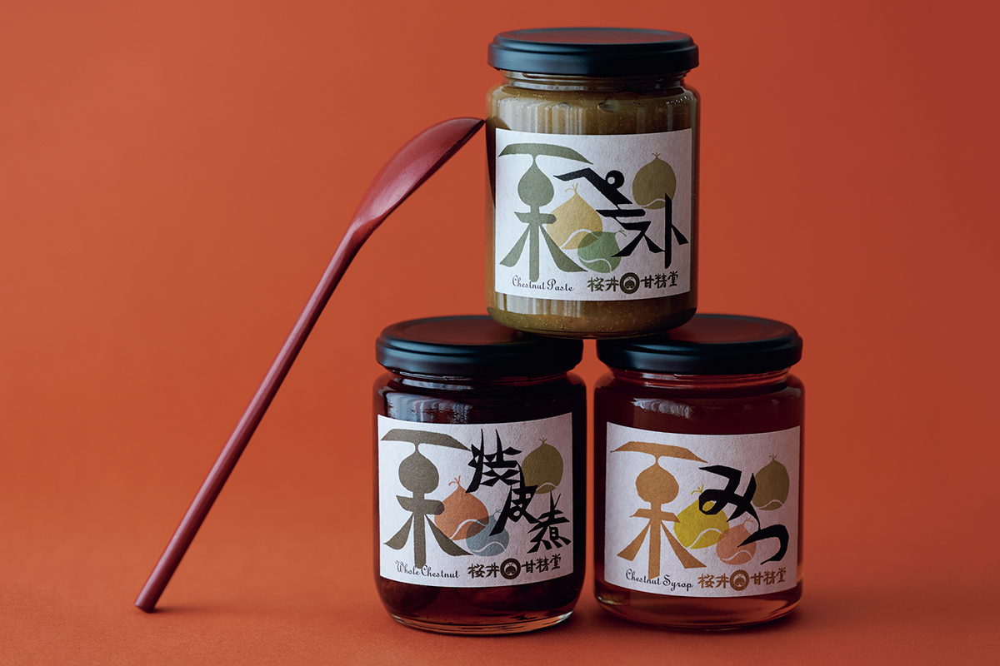
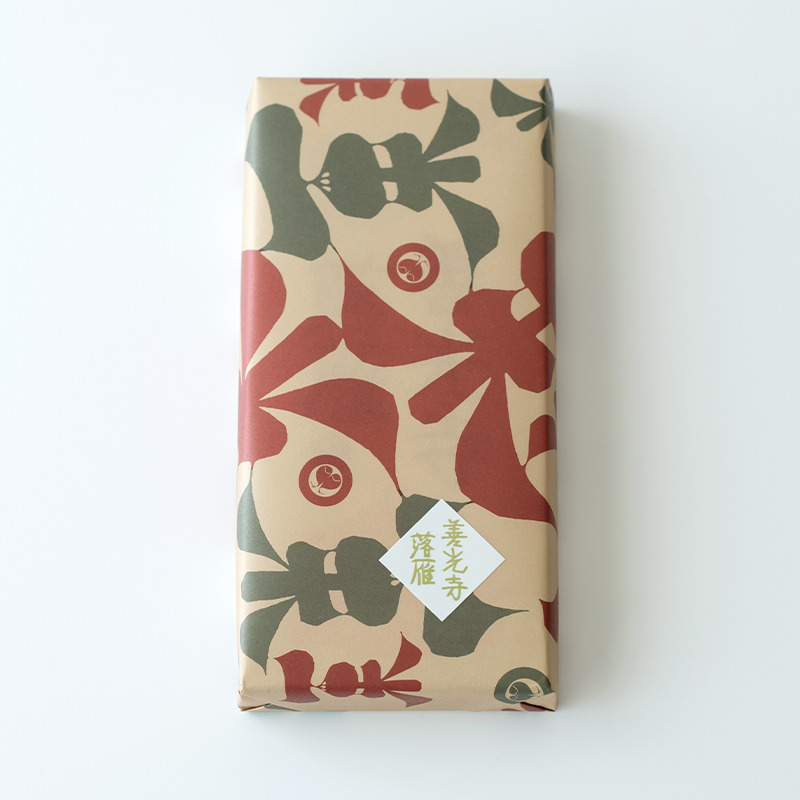
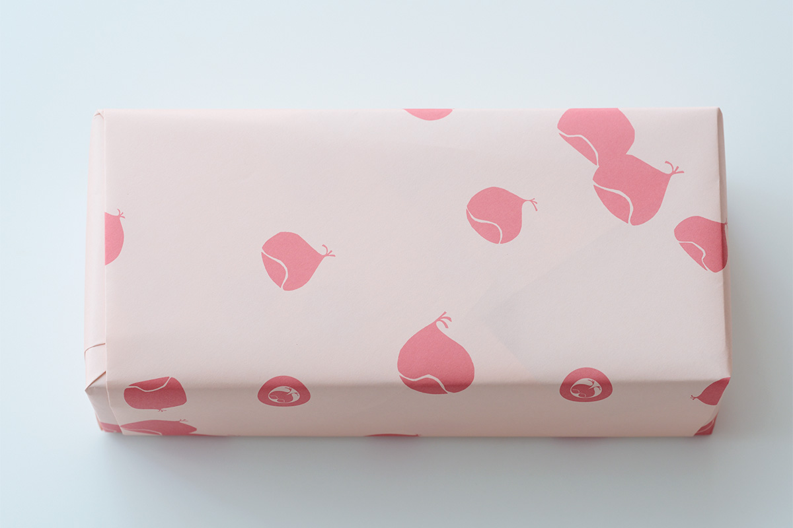
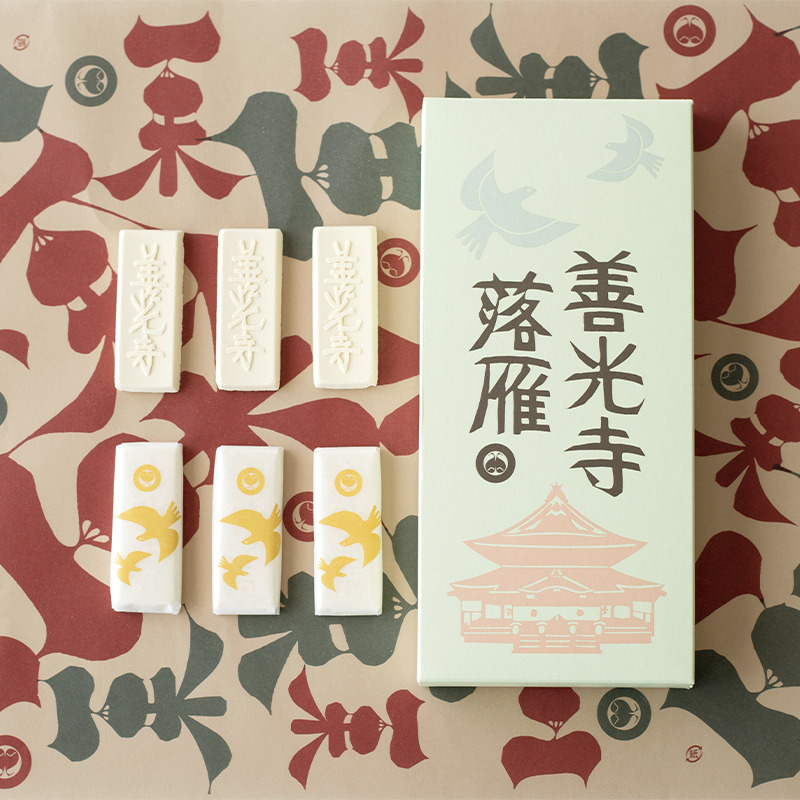
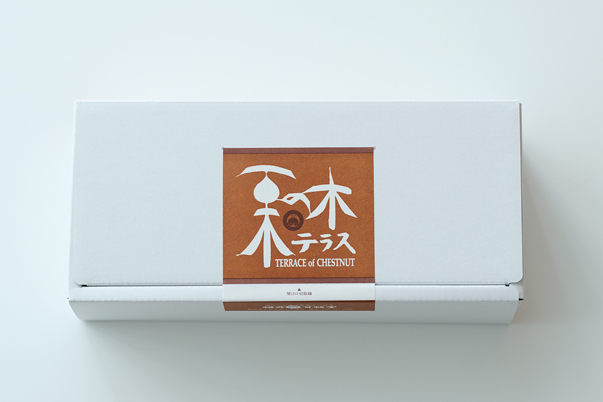
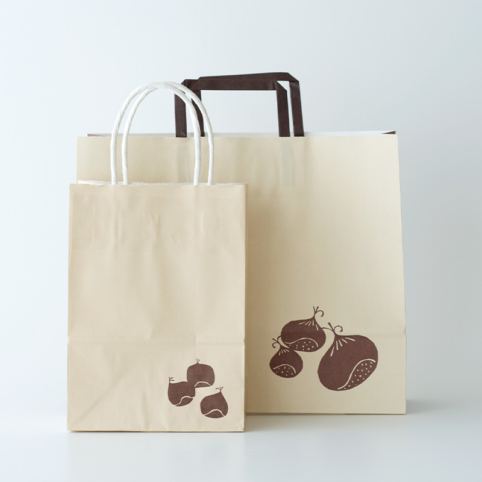

Префектура Нагано · Обусэ · сладости
«Сакураи Кансэйдо» в Обусэ: ракуган для паломников и каштаны в банках

Городок Обусэ на севере префектуры Нагано славится каштанами, и одна из старейших кондитерских здесь работает уже двести лет. Её стоит знать не только за каштаны, но и за прессованные сладости для паломников и за упаковку, которую хочется сохранить.
Лавка
Двести лет на каштанах
Обусэ давно известен как край каштанов, а «Сакураи Кансэйдо» входит в число старейших кондитерских города: ей около двухсот лет. Слава у неё каштановая, но ассортимент шире, и почти всё здесь хорошо не только на вкус, но и на вид.
Всю упаковку лавки, от надписей и рисунков на коробках до обёрточной бумаги, создал Кэйити Тории, мастер катадзомэ, крашения ткани и бумаги по трафарету. Он же расписывал куклы кокэси и рисовал местные народные игрушки. На его обёрточной бумаге по листу раскатились круглые каштаны, и, разворачивая покупку, трудно не улыбнуться.


Ракуган
Сладость для паломников храма Дзэнко-дзи
Кроме каштанов, у «Сакураи Кансэйдо» есть и сладость из красного гороха, которая известна паломникам. Это «Дзэнкодзи ракуган», прессованное печенье, которое везут домой из паломничества в храм Дзэнко-дзи.
Храм Дзэнко-дзи стоит в городе Нагано, его основали в 644 году. Он не принадлежит ни одной буддийской школе. Храм так известен, что в японский язык вошла поговорка «Пошёл за быком и попал в Дзэнко-дзи»: по народной сказке, так говорят, когда случай или чужое приглашение неожиданно приводят к хорошему.

В 1970 году храм разрешил кондитерской использовать своё имя, и с тех пор ракуган стал классическим подарком из паломничества. Его делают по старому способу: красный горох даёт ореховый, слегка поджаренный аромат и мягкую сладость. Он хорош к зелёному чаю, но подходит и к кофе.
Надпись, рисунок на коробке и обёртку создал тот же Кэйити Тории. Над храмом на коробке летят изящные птицы. Ракуган пишется теми же знаками, что и «опускающийся гусь», и кажется, что птицы на коробке это гуси. Но в лавке объяснили: это голуби.
Банки
Каштаны, когда их нет в сезоне
В «Сакураи Кансэйдо» есть сладость для того времени года, когда свежих каштанов не найти: три банки, в которых закрыт вкус урожая.
Для «каштановой пасты» в сезон отбирают лучшие плоды, быстро пропаривают и растирают. Из неё можно сварить сладкий суп или просто намазать на хлеб. «Каштаны в кожице» варят целиком, оставляя тонкую внутреннюю кожицу, и мастера терпеливо убирают из них горечь: это уже готовый десерт. «Каштановый сироп» с ароматом и экстрактом каштана подходит к блинчикам и к сладостям из агар-агара.

На этикетки тоже стоит посмотреть: это рисунки Кэйити Тории в его узнаваемой манере катадзомэ, и у каждой банки свой цвет. Вкусно, да ещё и упаковка в духе народного ремесла: такую покупку приятно дарить целым набором.

«Сакураи Кансэйдо», главный магазин
- Адрес
- префектура Нагано, уезд Камитакаи, посёлок Обусэ, 774
- Телефон
- +81 26-247-1088
- Часы работы
- 8:30–17:00
- Выходные
- без выходных
- Сайт
- kanseido.co.jp
Фото: Вакана Баба.